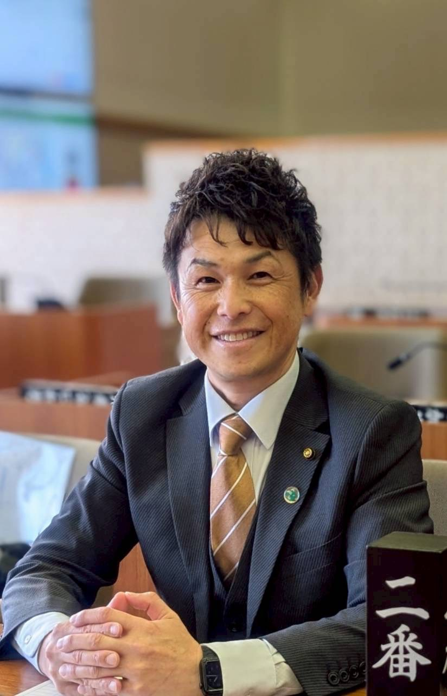
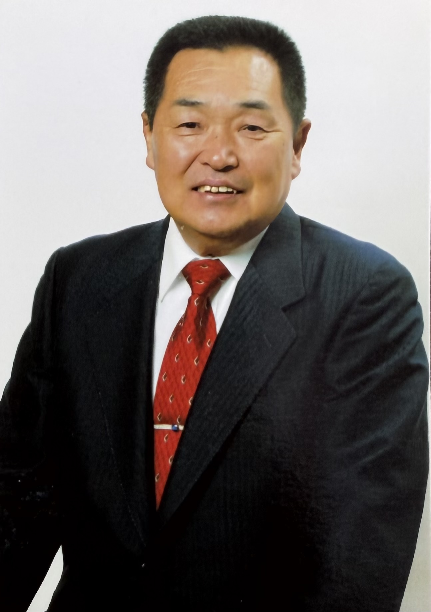

ユーザーアンケート協力のお願い
大学生が手探りで運営しているため、皆様のアドバイスが何よりの助けになります。
「見やすさ」や「改善してほしい点」など、1分程度のご意見をお聞かせください。
※ご回答は統計的に処理され、個人が特定されることはありません。
選挙データ
甲斐市議会議員選挙
前回甲斐市議会選挙：令和4年4月
前回投票率
39.77%
前回投票数
24,382票
前回期日前投票数
8,943票
前回有権者
61,302 人
今回有権者数
（令和8年3月1日現在）
61,572 人
出馬数 / 議席数
21/19名
告示日
2026年4月12日
開票日
2026年4月19日
開票結果
最終更新：4月19日 22:50| 順位 | 氏名 | 得票数 | 当落 |
|---|---|---|---|
| 依田 那津希 | 2,076票 | 当 | |
| 河野 みひろ | 1,533票 | 当 | |
| 691票 | 当 | ||
| みなかわ ちか子 | 553票 | 当 | |
| 山坂 賢太 | 1,121票 | 当 | |
| 保坂 康 | 899票 | 当 | |
| 金丸 寛 | 689票 | 当 | |
| 大久保 明 | 341票 | ||
| 赤沢 あつし | 1,075票 | 当 | |
| 安倍 健治 | 422票 | ||
| 山本 英 | 1,856票 | 当 | |
| 若尾 しょうこ | 1,846票 | 当 | |
| 滝川 みゆき | 920票 | 当 | |
| 加藤 敬徳 | 1,244票 | 当 | |
| 谷口 和男 | 1,075票 | 当 | |
| 藤原 正夫 | 727票 | 当 | |
| 黒崎 まさき | 862票 | 当 | |
| 大久保 ともお | 1,636票 | 当 | |
| 金丸 こうじ | 1,211票 | 当 | |
| 秋山 照雄 | 1,368票 | 当 | |
| 小澤 重則 | 1,081票 | 当 | |
| 合計得票数 | 23,227票 | ||
届け出順

依田 那津希
- 子どもたちが未来を描けるふるさとに
- 安心して住み続けられるふるさとに
- 生き甲斐を見つけられるふるさとに

河野 みひろ
- 不登校の子どもなど、すべての子どもが安心して過ごせる居場所を整える
- 必要な人に必要な支援を届ける仕組みを整える
- 持続可能なまちづくりを進め、また訪れたくなる地域へ
みなかわ ちか子

山坂 賢太
- 交通弱者のための移動不安の解消
- 次世代地方自治会体制づくりの構築及び防災対策促進
- 竜王駅周辺の活性化を中心とした賑わいの創出
保坂 康
- 医療・介護充実のためのいつでも適した救急対応や住宅福祉の充実
- 街全体のバリアフリー化や通学路の安全確保、街頭の設置の推進
- 安心して預けられる保育、病児、病後児の保育の充実
金丸 寛
- 自然災害に強い地域づくり、災害時には水の確保の整備
- 教育への投資の拡大
- 温泉施設などの公共施設の統・廃合の是非

大久保 明

赤沢 あつし
- 心豊かな子どもたちのために、教育・文化の充実
- 少子高齢化に対応した福祉・医療の充実
- 中山間地域振興に努める

安倍 健治
- 子供が夢に挑戦できる、学習・スポーツのサポート
- 公共交通、福祉などの充実で誰もが暮らしやすい街づくり
- 祭りとイベントであふれる、ワクワクした甲斐市へ
山本 英
若尾 しょうこ
- 大人になった甲斐っ子がくらしたくなるまちづくり
- 家庭環境に関わらずこどもが健やかに育つ子育て支援
- 健やかに暮らすための医療・介護の充実
滝川 みゆき
- 保育園のICT化や保育士の充実による安心して子育てできるまちづくり
- 学校教育指導員の十分な配置などの環境の整備
- 自治会の組織の改革による高齢者にも住みやすいまちづくり

加藤 敬徳
- 地域防災力の強化、避難所環境の整備
- 若者の声を活かした街づくりを進め、「若者に選ばれる甲斐市」をめざす
- 認知症施策の推進、健康維持支援や身寄りのない高齢者の支援の充実

谷口 和男
- 基金を活かした国保税、介護保険料の引き下げ
- 市民温泉など統廃合STOP
- 三歳未満児の第一子から保育料を無料に
藤原 正夫
黒崎 まさき
- 誰もが無理なく参加できる、持続可能な自治会への改革
- 地域で支えあう経済
- 地域で働ける環境
大久保 ともお
- 安心安全なまちづくり
- 医療・介護などの連携による福祉のまちづくり
- 商工業・農業振興のまちづくり
金丸 こうじ
- 若者の声を活かした街づくりを進め、「若者に選ばれる甲斐市」をめざす
- 認知症施策の推進、健康維持支援や身寄りのない高齢者の支援の充実
- 自治体のデジタル化
秋山 照雄
- 子育てしやすいまちづくりに努力します
- お年寄りが安心して暮らせるまちづくりに努力します
- 地域の課題解決に努力します
小澤 重則
【免責事項】
本ページの情報は、各候補者の活動や主張の一部をまとめたものであり、すべての情報を網羅するものではありません。投票の際は、必ずご自身でも各候補者の公式サイトやSNS等の情報をご確認ください。